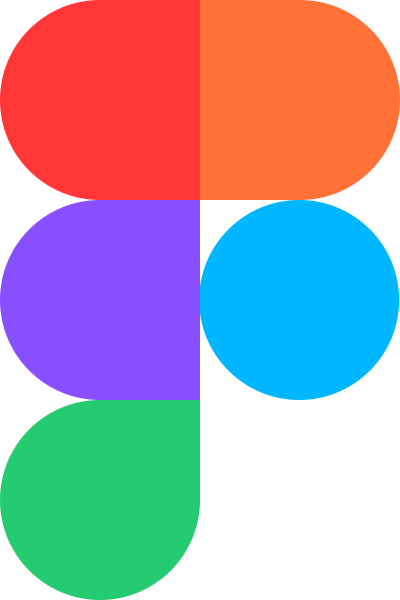
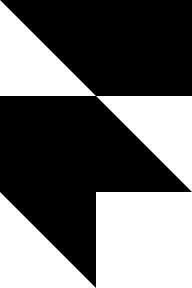
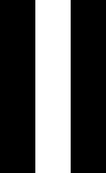

I have always believed the best way to learn is by building. Here are a few side projects I have been tinkering with, and the AI tools I used to build them.
Claude Code
Cursor
Gemini
GitHub

Figma

Framer

ElevenLabs
Motion Design Subagents & Skills
I love motion design and the subtle details that bring an interface to life. To bridge the gap, I started developing custom subagents and skills for Claude Code to automate motion work that would otherwise take days or weeks to build manually.
Claude CodeBlenderRemotionElevenLabs
Extra Life Mart
In progress
Frustrated by mobile app stores packed with aggressive ads and monetization loops, I wanted to build something pure: a cozy, free browser game where you play a beachfront shop owner managing inventory, stocking shelves, and serving customers.
Claude CodeGoogle GeminiPhaserTypeScript
How I Use AI in My Work
01
Research
When I am diving into a new space, I use AI to quickly cut through the industry jargon, map out the competitive landscape, and audit existing product experiences.
02
Planning & Validation
I treat AI as a collaborator and have it poke holes in my early ideas. I made my own PM Skill and use it with Claude Code's Plan mode to talk through complex logic and evaluate my direction, which helps me catch edge cases and blind spots before I commit.
03
Writing
Whether it's keeping UX copy clear and concise, writing comprehensive documentation, or drafting scripts for user interviews, I use Google Gemini to help improve my writing.
04
Concepts/Wireframes
I use Claude Code alongside the Figma MCP to integrate AI directly into my design canvas. It lets me instantly map out my thoughts, structure user flows, and generate early wireframes to validate the information architecture.
05
Prototyping
I use Cursor and Claude Code to build robust, functional prototypes. Baking in real logic and design tokens allows for genuine user testing and creates a seamless translation from design to code, all while managing my changes and live updates via GitHub.
06
Data & Analytics
I use AI to make sense of dense data. It quickly parses through test results and metrics to find the underlying user insights, turning raw information into clear validation for where the product should go next.